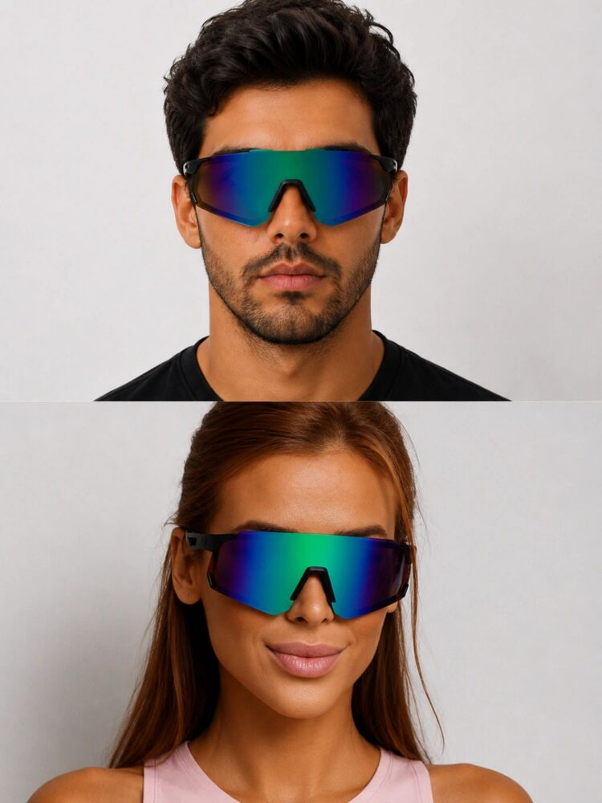
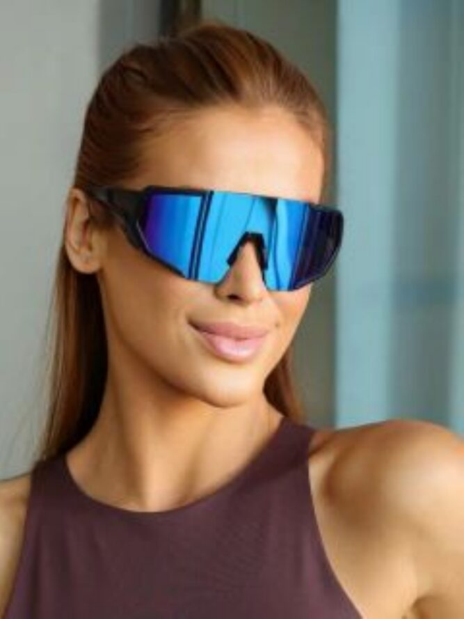
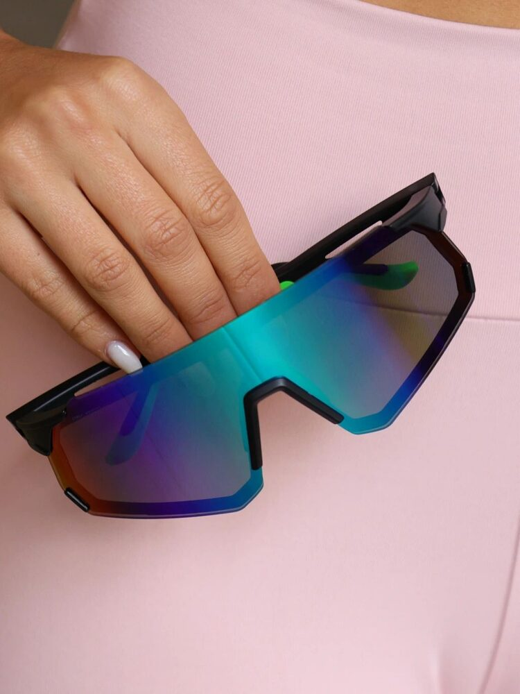

19 / COLEÇÃO PIDE · PDE-019



Vortex
Modelo esportivo da nova coleção PIDE Eyewear.
DESIGN
Detalhes e especificações podem ser adicionados individualmente nesta página.
PERSONALIDADE
Uma peça com identidade própria, inspirada no litoral, no mar e no estilo PIDE.